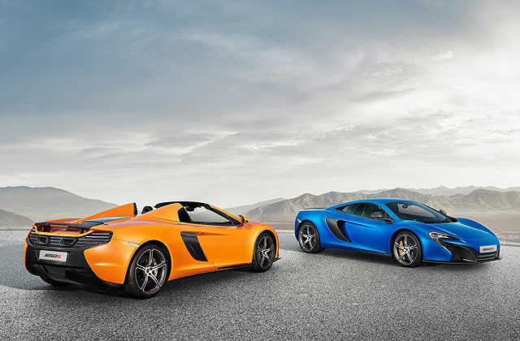
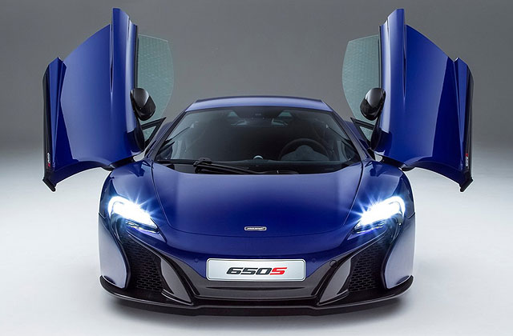
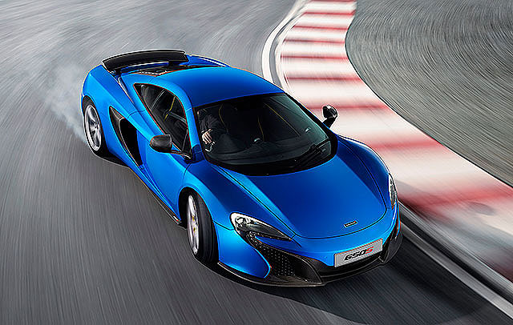
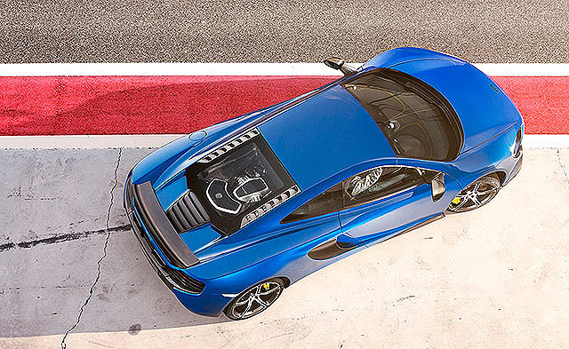
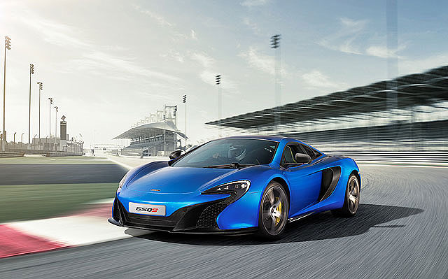

《Koenigsegg Agera R BLT》
即將登陸對岸的夢幻超跑～  大家還記不記得在有為曾經分享過的史上馬力最大車車TOP 10中，以高達1140匹最大馬力名列第六名的Koenigsegg Agera R呢？如果有機會能夠擁有這樣的夢幻超跑，你會不會希望它看起來是獨一無二的呢？最近Koenigsegg就依照買家的需求打造了一輛客製化的Agera R BLT，快跟著有為一起來看看吧！ 原汁原味的內容在這裡
|
|
|---|

 |
結合最大輸出馬力「650匹」和Sport之字首「S」為名的650S車系，外觀、底盤與傳動系統皆源自MP4-12C車系，搭配同級車僅見、量輕質堅的單體碳纖維底盤 (One-piece Carbon Fibre Monocell)，車頭造型取材自已成為品牌新世代家族特徵之McLaren限量超跑：P1，且廠徽更換成與MP4-12C創廠50週年版一樣的F1車隊專屬廠徽，並新增650S專屬前擾流套件，車尾後保險桿則師法MP4-12C GT3賽車，採獨家三片式設計手法，進一步降低車身風阻係數，並配置更大的底盤分流器，下壓力在時速約240公里 (150英哩) 時，可比MP4-12C多24%。
 |
車側部分，儘管650S車系的輪廓與MP4-12C車系極為相像，但是原廠仍舊替它換上專屬車側進氣口設計、嵌刻650S字樣的全新車門側裙、全新輕量化鍛造鋁圈、全新陶瓷碳纖維剎車等，除了看起來更有跑格外，也讓650S車系能夠擁有更好的散熱與空力表現。
此外，如同MP4-12C車系一樣，650S車系亦配置了McLaren引以為傲的Airbrake主動式空氣煞車系統，能在高速煞車時，自動升起並提供後軸更多的下壓力、提升整體的穩定性，而且650S車系配置的新一代Airbrake系統已不侷限在駕駛者踩下煞車、或是使用Aero模式駕駛時才會作動，而是進化到只要電腦偵測車輛現在處於需要下壓力的狀況時，其便會自動開啟，更添激烈操駕時的安心感。
 |
性能表現方面，同MP4-12C車系、650S車系所採用的動力單元也是一具3.8升雙渦輪增壓V8汽油引擎，不過相較於MP4-12C的625匹最大馬力，650S擁有了與車名相稱的動力輸出，可在引擎轉速7,250轉時、提供650匹之最大馬力，並於6,000轉帶來69.1公斤米的最大扭力 (95%扭力輸出可在引擎轉速3,000轉起全數爆發)。
 |
因此，在7速SSG雙離合器自手排變速箱的加持下，650S Coupe不但能夠在3秒整完成靜止至時速100公里的加速，由靜止加速至200公里和300公里亦分別只需8.4秒及25.4秒，比MP4-12C之3.1秒還要更快，並擁有每小時333公里的極速表現。
 |